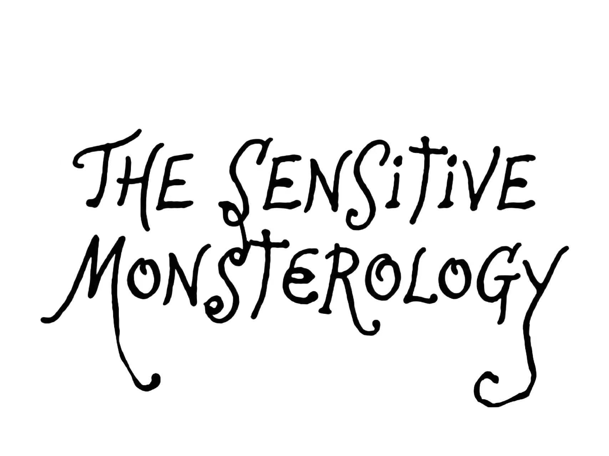
敏感怪物学Telling the Story of the Monster as I See It.讲述我眼中的怪物故事。
A visual archive of hyper-perceived sensations.一份关于高度感知体验的视觉档案。

“A VISUAL ARCHIVE OF HYPER-PERCEIVED SENSATIONS.”“一份关于高度感知体验的视觉档案。”
From the perspective of highly sensitive individuals, this series explores emotional overload and energy drain in social environments.本系列从高敏感人群的视角出发，探讨人在社交环境中的情绪过载与能量消耗。
By conceptualizing emotions as “invisible monsters,” I translate visualized sensations into silhouettes and textures, where every fabric becomes a part of a monster’s skin—an embodiment of our inner holes and sensitive antennas.我将情绪概念化为“无形的怪物”，并把被感知的体验转化为轮廓与肌理。每一种面料都成为怪物皮肤的一部分，具象化我们内在的空洞与敏感的触角。
ENTER THE
MONSTER'S MIND
Move through four perceptual states. Drag the textile fragments, disturb the image layers, and open any piece of evidence.进入四种感知状态。拖动面料碎片、扰动图像层，并点击任意档案查看细节。
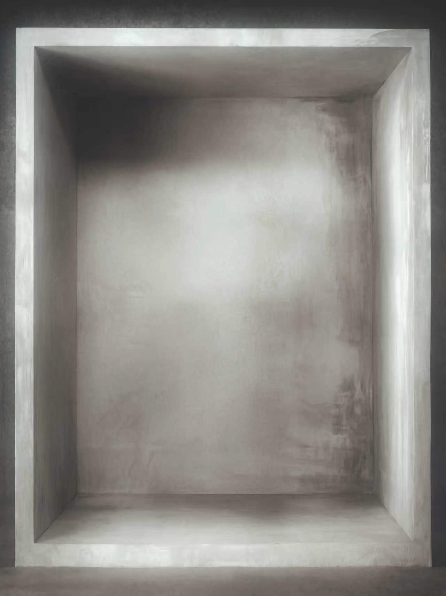
 BOXED SPECIMEN
↻
BOXED SPECIMEN
↻
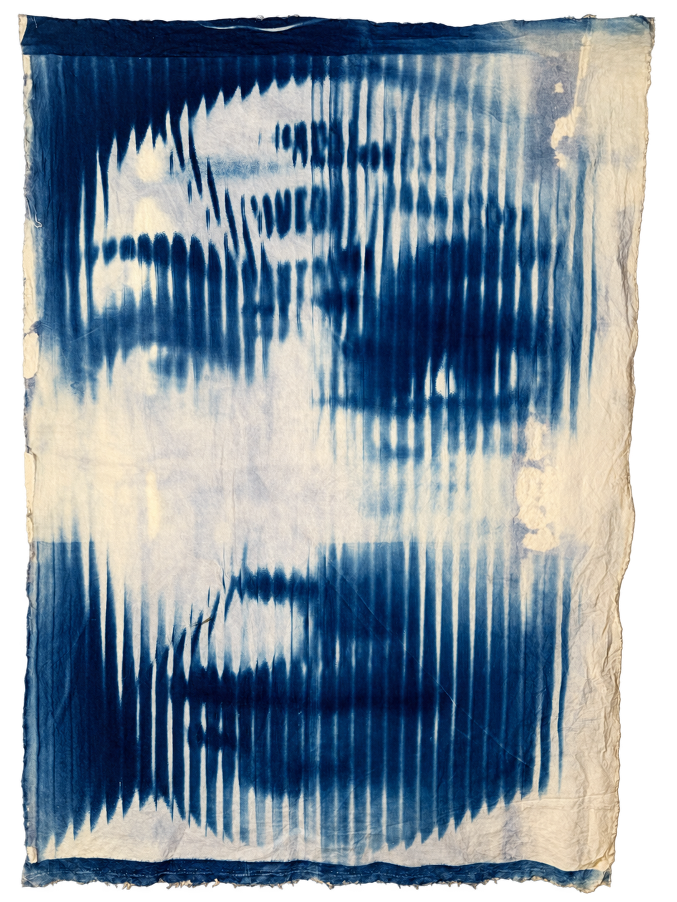
DRAG ME ↻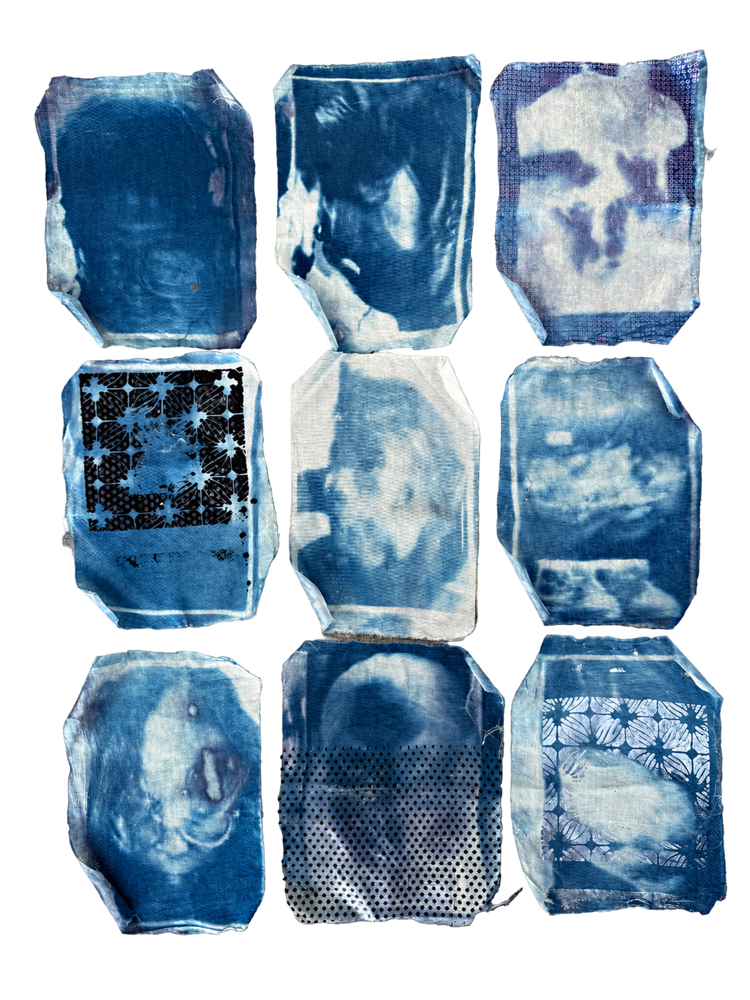
DRAG ME ↻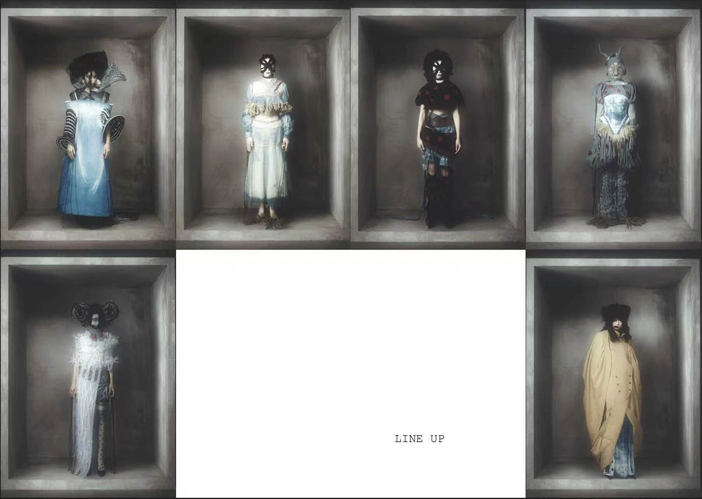
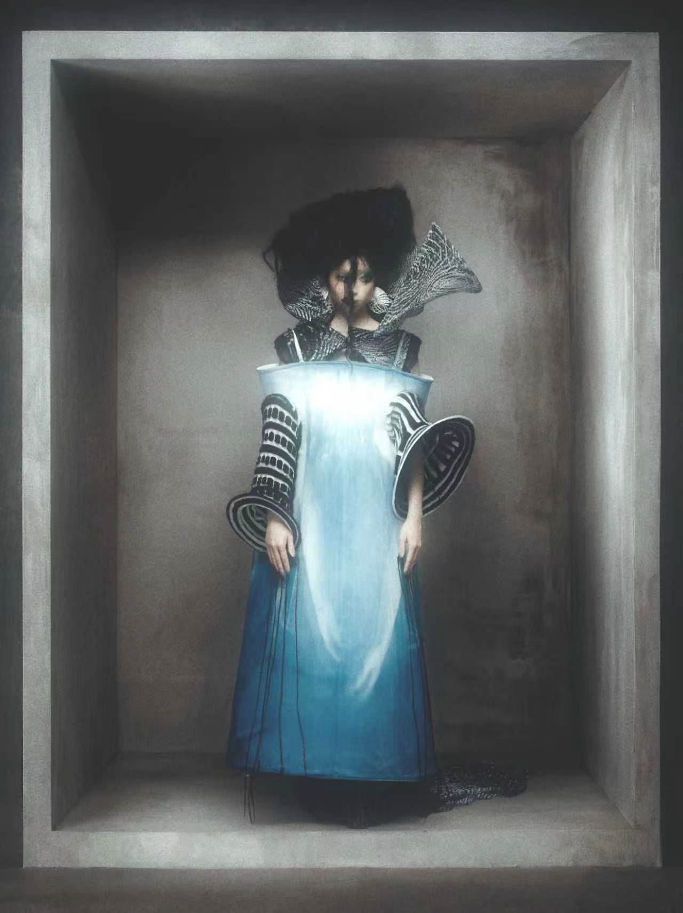
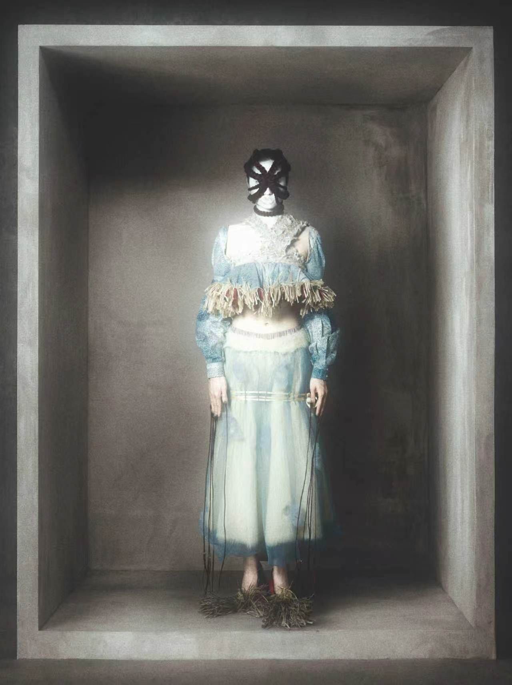
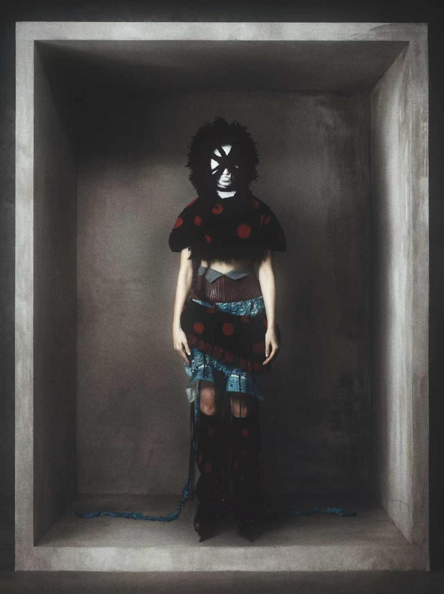
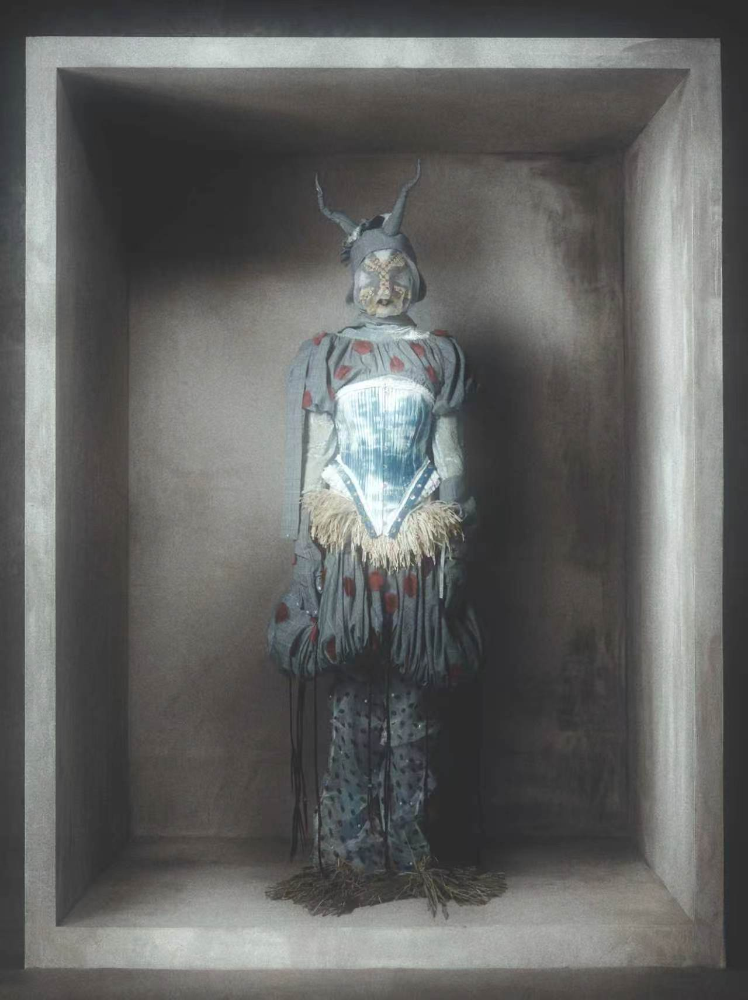
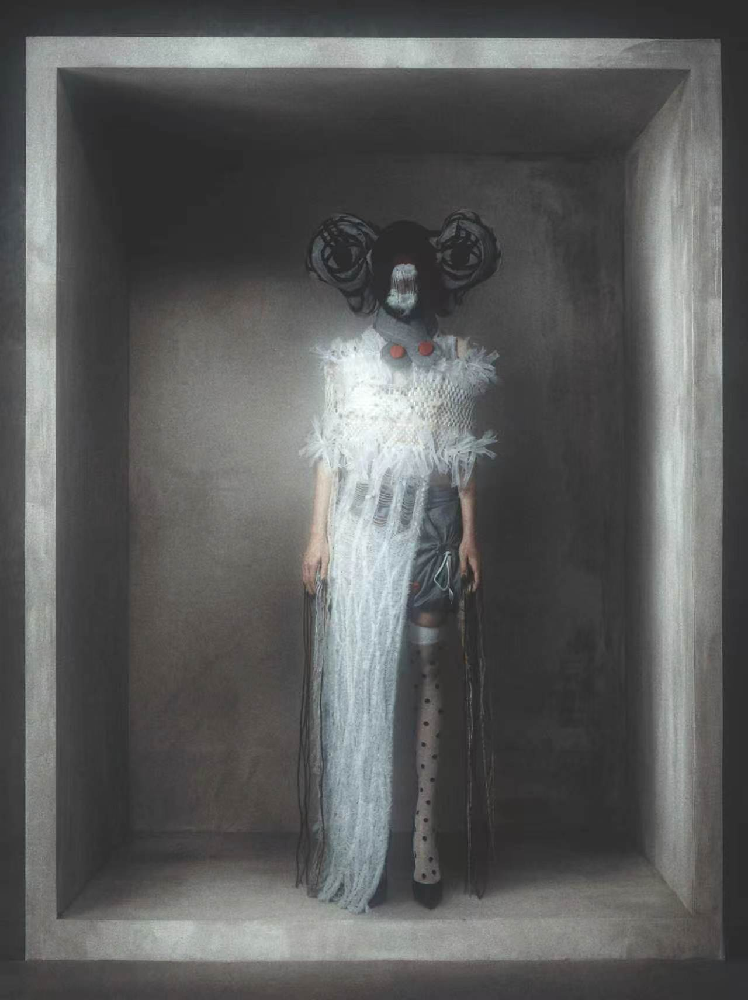
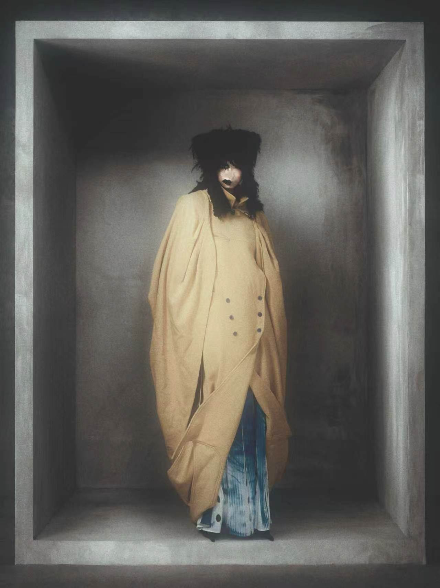